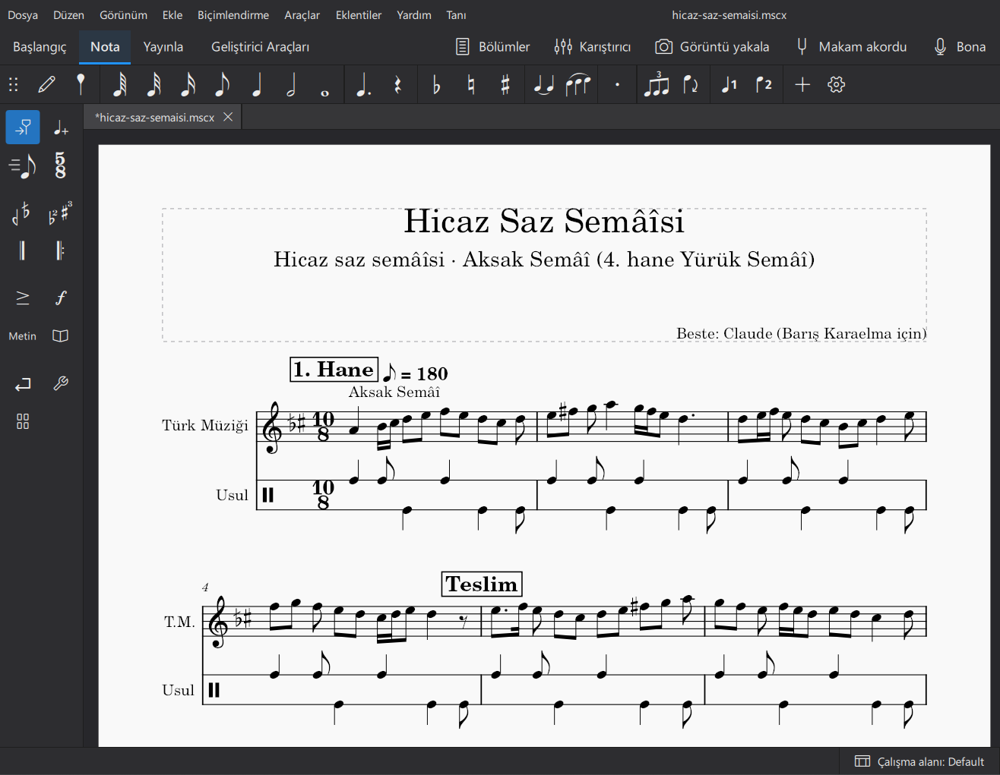

TurkScore indir
Windows için indir (0.3)
Mac için indir (0.3)
Windows sürümü taşınabilirdir, kurulum gerekmez: zip dosyasını bir klasöre çıkarıp TurkScore\App\MuseScore\bin\MuseScore4.exe dosyasını çalıştırın (yaklaşık 144 MB). Mac sürümü Apple Silicon ve Intel içindir (yaklaşık 197 MB). GitHub hesabı gerekmez.
Bütün sürümler.

Neler yapar?
- AEU ve THM donanımları: 17 makam donanımı, TRT Türk halk müziği donanımları; koma, bakiye, küçük ve büyük mücennep diyez ve bemoller; kendi donanımınızı oluşturma.
- Makama göre perde ayarı: notalar yazıldığı makamın perdeleriyle çalınır; Makam akordu penceresi ve "Diziyi dinle".
- Usuller: Türk müziğindeki sap bağlantılarıyla usuller, düm ve tek çizgileri, usullü metronom, kendi usulünüzü oluşturma.
- Ahenk: Bolâhenk'ten Dâvut Mâbeyni'ne ney ahenkleri.
- Türk arıza ↑/↓ adımları ve Finale benzeri Hızlı giriş.
- SymbTr eserlerini açma: SymbTr MusicXML dosyaları Türk makam notası olarak açılır.
- Makam Eğitimi: makam dizileri, usuller ve örnek eserlerle hazır dersler.
TurkScore hakkında
TurkScore, açık kaynaklı MuseScore Studio 4.7 üzerine kuruludur ve aynı lisansla, GNU GPL v3 ile dağıtılır. Kaynak kodu: github.com/bariskaraelma/TurkScore.
English
TurkScore is a free, open-source Turkish makam music notation software for Windows and Mac, built on MuseScore Studio 4.7. It writes makam key signatures, usul rhythm cycles and the AEU and THM comma accidentals, and plays scores in the tuning of their makam. Developer: Barış Karaelma. Download.